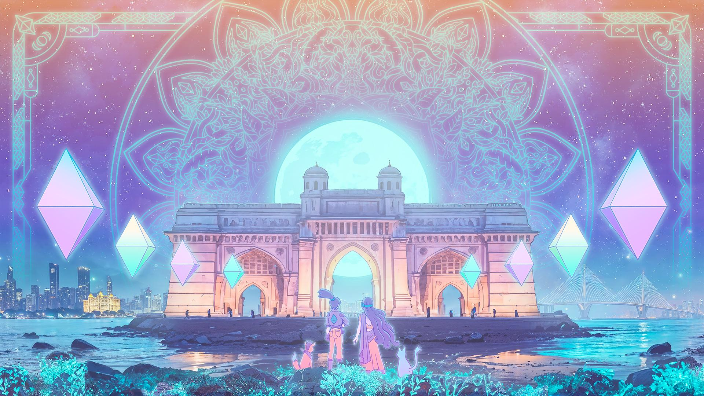

A movement · not a brand
The Open
Source Orchestra
Music as sanctuary. Like Ethereum, it is owned by no one — decentralized, and open to permissionless contribution.
Open Source Music
Every voice is a node
Sounds of consensus
Permissionless · Stewarded · Community-driven
The story beginsMovement I
The Invitation
There are no auditions here. No gatekeepers tuning the door. No guest list, no wrong instrument, no one waiting to tell you that you aren't ready. If you feel the pull toward the music — you already have a seat in the orchestra.
Radical inclusion is not a policy we wrote down. It is the opening chord. The person who has played for thirty years and the person who has only ever hummed in the shower — the orchestra needs both, exactly as they are.
“You don't join the Open Source Orchestra. You notice you were always in it.”
Movement II
The Oldest Protocol
Long before blockchains, mankind forked the original protocol: a gathering — often in a circle, in a city square or an open field — of chanted, rhythmic melodies dancing to the harmonies of instruments of all kinds. That ancient tradition is the simple inspiration for the Open Source Orchestra.
No one owns the podium. Stewards tend the space like gardeners — steering, never conducting. No hierarchy deciding whose part matters. We listen to one another — and we all conduct this space together. Everyone who shows up is a contributor. Not an audience. Contributors.
This is not a brand. It will never be a logo, a product, or a company. It is a movement, a philosophy, a way of being — principles and a manifesto carried from gathering to gathering, told and retold, never owned.
And the score is open. You don't need a Devcon to begin — a fire circle, a rooftop, a hackathon, a city square will do. Fork the orchestra wherever you are, and it sounds there too. That is the oldest protocol, working as designed.
“The whole is infinitely greater than the sum of its parts — because the parts are listening.”
Movement III
The Values We Play
The Open Source Orchestra is Ethereum's values, expressed not in a whitepaper but in a room full of people making sound together. This is the manifesto of the Devcon 8 Music Stage — carried exactly as it was written:
Word for word · the Music Manifesto
♪ Music Manifesto ♪
Music as sanctuary. This stage is a living expression of Ethereum's core principles — decentralization, censorship resistance, open-source collaboration.
Like crops grown in shared soil, the music here belongs to the community. Every voice is a node. Every sound, a contribution.
Open Source Music
Every voice is a node
Sounds of Consensus
- Censorship Resistance: The Music Space has no owners — stewards steer, but never gatekeep. "Conductor-less".
- Open Source: Creative Commons
- Private / Public: Every sound is self-owned — pluralistic privacy is power when private individuals play together in public.
- Secure: We cover the atmosphere and protect the vibe of the community within a higher frequency
The Music Stage remains by and for the community.
There isn't room for every artist to have a slot, but there is infinite room if we play together, letting the music spread as openly as knowledge itself.
We steward this stage like we steward a garden. The instruments are permissionless. The stage is a sanctuary.
“Pluralistic privacy is power — private individuals, playing together in public.”
Featured voice · the brother who started it all 🎻
🎻 Matteo Tambussi 🎻
Co-founder of the Open Source Orchestra tradition — born at ETH Prague 2022, alive in the circles of Devcon ever since.
On June 17, 2022, Matteo submitted the first music DIP in Devcon history — “Music Sessions | Open Mic Stage” for Devcon Bogotá — arguing that jamming live amongst devs creates bonds no whitepaper can. He was right. The stage you're reading about exists because he asked for it first.
Musician, linguistics passionate, web3 OG from Turin, Italy — from the EEA survey days to ethlocal.co and SpaghettETH, Matteo has been weaving music into Ethereum since before it had a stage.
Two gifts from Matteo, free to keep — press play:
🎻 Ginger Game
🎻 Luogoper
Carry the lineage forward: DIP #8576 — the Devcon 8 Mumbai Music Space · the open call for musicians, DJs & volunteers
“None of this would be possible without you, brother.” — Shaka 🌺
Movement IV
Mumbai, We're Coming
- WhenNovember 3–6, 2026
- WhereJIO World Convention Centre, Mumbai
- StatusCulture Track · DIP #8576

Welcome, traveler. Devcon 8. Mumbai. The biggest gathering of the Ethereum family — and this year, the incredible musicians of India join the circle. The Open Source Orchestra will be there: not on a stage above you, but in a circle beside you.
The orchestra has walked this road before — born at ETH Prague in 2022, alive in the circles of Devcon 6 Bogotá and Devcon SEA. Each gathering passes the song to the next. Mumbai is the biggest circle yet.
The Devcon Music Space brings together live musicians & DJs for four days of open improvisation, curated performances, and real-time collaboration — turning the space into a stage for shared musical experimentation. It embodies Ethereum's values of openness, permissionless participation, and collective creation, through the universal language of music.
The stage is Sanctuary Tech — circular and non-directional. There is no “front.” Performers face one another; the audience wraps around the music. Warmth, belonging, refuge — a home with clear boundaries and an open invitation.
And the orchestra itself? The orchestra is whoever shows up.
♫ The gatherings are permissionless jams
Bring an instrument. Bring your voice. Bring a drum, a laptop, a kalimba, a poem — or bring nothing but yourself. That is more than enough.
- A community backline — drum kit, guitars, keys, a percussion circle, DJ decks — shared by all
- Tabla, harmonium, dhol, bansuri — India's classical traditions at the heart of this edition
- Live coders and algoraves — software engineers programming music in the open
- Everyone who shows up is part of the orchestra — we all conduct this space together
Movement V
Answer the Call
Participation in the Devcon Music Space begins with an open call for musicians, DJs, and volunteers. Applications are reviewed by the Music Space Committee, which curates the program and assigns performance slots across the four days of Devcon. Volunteers help operate the space and contribute to creating a welcoming, collaborative environment.
-
September – October
Application & Selection
Apply as a musician, DJ, or any musical performance. The Music Space Committee curates the lineup and assigns performance slots and volunteer roles.
-
November 1–2
Pre-production
Volunteers arrive early to co-create the Music Space — setup, sound checks, rehearsals, and preparing the experience for Devcon.
-
November 3–6
Devcon!
Perform, jam, collaborate, and connect through four days of live music, DJ sets, and Open Source Orchestra sessions with musicians from around the world.
♫ The Open Call is live
Musicians, DJs, live coders, volunteers — the circle is forming. Scan the code or tap below to add your voice.

Open Call Form ↗ opens “Music Performance at Devcon 8 India” on Google Forms
Interlude
Find Your Seat
Solo artists and bands, DJs and live coders, vocalists and dancers, VJs and live painters — every contributor sounds different, and the orchestra is richer for it. There is no small part — only parts that make the whole possible. Which one is yours?
- Lead
You carry the melody — you start the songs, name the visions, say the thing out loud first. - Harmony
You make others sound bigger — supporting, bridging, deepening every line you touch. - Rhythm
You keep the heartbeat — the organizers, the builders, the ones who hold the space steady. - Texture
You color the air — art, story, code, care. The details that turn a song into a place.
Finale
See You in the Circle
Open Source Music,
every voice is a node,
sounds of consensus.
Mumbai · November 3–6, 2026 · The orchestra is whoever shows up